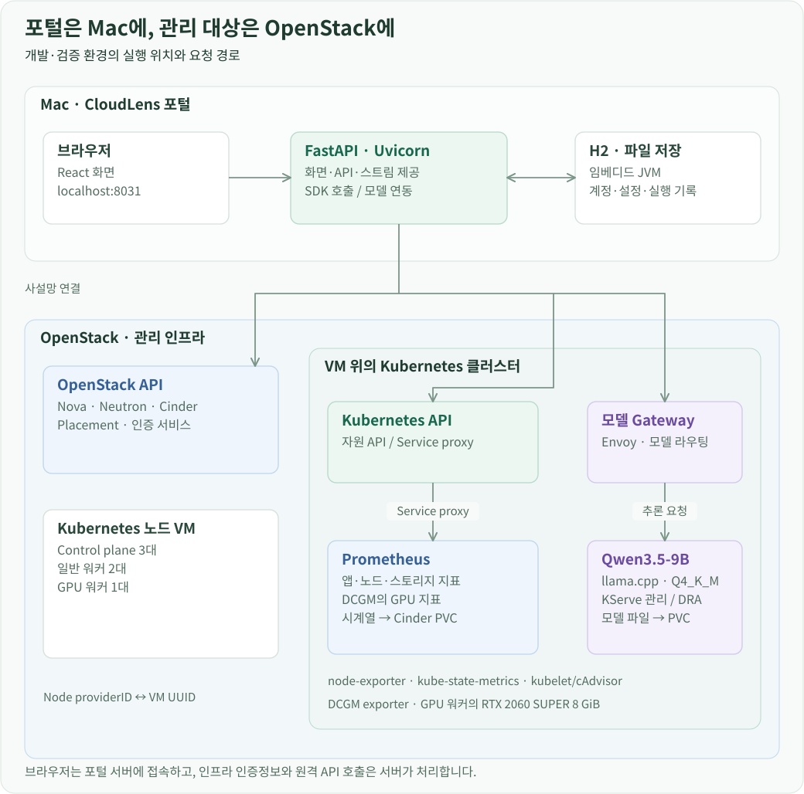

개요
CloudLens의 개발·검증 환경은 Mac에서 실행하는 포털과 OpenStack 위의 Kubernetes로 구성했습니다. 브라우저는 포털 서버에 접속하고, 포털 서버가 등록된 인증정보로 인프라와 통신합니다. 모니터링 서버와 주 사용 모델인 Qwen은 관리 대상 클러스터에 함께 배포했습니다.

Mac에서 실행하는 포털
React 화면을 Vite로 빌드한 뒤 FastAPI의 정적 파일 경로에 연결했습니다. Uvicorn이 127.0.0.1:8031에서 화면과 API를 함께 제공합니다. 브라우저의 목록 조회, 채팅, 로그와 터미널 요청은 이 서버로 들어옵니다.
H2는 별도 데이터베이스 서버를 띄우지 않고 파일 모드로 사용합니다. Python 프로세스가 JPype로 JVM을 시작하고, JayDeBeApi를 통해 H2에 접근합니다. 계정·연결 설정·채팅·작업 결과·모델 실행 기록은 포털 서버의 로컬 데이터 파일에 저장합니다. 연결 인증자료를 복호화하는 키도 포털 서버에서 관리합니다.
이 구성에서는 인프라 접속의 주체가 FastAPI 서버입니다. 브라우저가 Kubernetes나 OpenStack 인증정보를 가지고 직접 접속하지 않습니다. VM SSH도 서버가 개인키를 읽어 연결하고, 브라우저에는 터미널 입출력만 중계합니다.
OpenStack VM 위의 Kubernetes
검증 클러스터는 컨트롤 플레인 3대, 일반 워커 2대, GPU 워커 1대의 VM으로 구성했습니다. GPU 워커에는 RTX 2060 SUPER 8 GiB를 연결했습니다. 포털 서버는 사설망 접속 경로를 통해 Kubernetes API와 OpenStack API를 호출합니다.
Kubernetes의 OpenStack Cloud Controller Manager가 Node에 VM 식별자를 포함한 providerID를 기록합니다. CloudLens는 연결 프로필에 지정된 OpenStack에서 이 식별자를 조회해 Node와 VM을 연결합니다. 따라서 클러스터 목록에서 앱을 고른 뒤에도 Kubernetes 자원과 OpenStack 자원을 같은 경로로 탐색할 수 있습니다.
OpenStack 자원 조회와 변경은 서비스별 API를 사용합니다. VM은 Nova, 네트워크는 Neutron, 볼륨은 Cinder에서 읽고, 호스트의 할당 여유는 Placement에서 확인합니다. 이 호출은 모델 서버를 거치지 않습니다.
클러스터 내부의 Prometheus
monitoring Namespace에 kube-prometheus-stack을 배포했습니다. Prometheus는 kubelet·cAdvisor, node-exporter, kube-state-metrics와 NVIDIA DCGM exporter에서 지표를 수집합니다. 시계열 데이터는 Cinder CSI로 연결한 PVC에 보관합니다.
포털은 Kubernetes API의 Service proxy를 통해 Prometheus의 query API를 호출합니다. 등록된 kubeconfig로 인증한 뒤 cloudlens-monitoring-prometheus:9090 Service에 요청을 전달하는 방식입니다. Prometheus를 외부 포트로 공개하지 않고도 브라우저에서 앱별 지표를 볼 수 있습니다.
CloudLens가 계산한 앱의 Pod·PVC 범위로 PromQL 조건을 만들고, 반환된 시계열을 자체 대시보드에 그립니다. Grafana를 별도로 띄워 화면을 삽입하는 방식이 아니라, 포털의 앱 선택과 자원 상세에 같은 그래프를 연결했습니다.
GPU 워커의 모델 서버
Qwen3.5-9B는 Q4_K_M GGUF로 양자화된 모델을 llama.cpp 서버에서 실행합니다. KServe의 LLMInferenceService/qwen35-9b가 추론 워크로드를 관리하며, Pod는 GPU 워커에 배치됩니다. 모델 파일은 PVC에서 읽고, GPU는 DRA ResourceClaim으로 요청합니다.
AI 요청은 OpenAI 호환 API 형식으로 Envoy Gateway에 전달합니다. 모델 이름에 맞는 경로가 InferencePool과 endpoint picker를 거쳐 추론 Pod로 이어집니다. 포털은 모델의 실행 엔진 대신 API 주소와 모델명으로 호출하므로, 모델 배포를 바꿔도 자원 조회나 채팅 화면은 같은 인터페이스를 사용합니다.
비교 모델은 포털 서버의 Codex exec 어댑터로 실행했습니다. 동일한 모델 요청을 공통 인터페이스로 전달하고 응답을 같은 형식으로 기록해, 로컬 Qwen의 결과와 비교할 수 있도록 했습니다.
이 배치에서 포털의 H2에는 사용자 작업과 실행 기록이, Prometheus의 PVC에는 시계열이, 모델용 PVC에는 가중치가 저장됩니다. 각 데이터는 사용하는 프로세스 가까이 두고, CloudLens는 API를 통해 필요한 정보를 조합합니다.